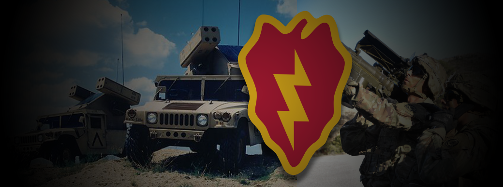

U.S. Army Veteran
Transitioning from a role as a 14S Avenger Crew Member in the U.S. Army, I bring a unique blend of technical expertise and operational experience to the civilian business world. In my military career, I was responsible for operating and maintaining cutting-edge defense systems, such as the Avenger Air Defense System, which involved proficiency in complex technology interfaces, radar systems, and missile launchers. This experience honed my ability to operate under pressure, troubleshoot technical issues, and ensure the utmost precision in executing critical missions.
Furthermore, my role demanded a keen understanding of cybersecurity protocols, as safeguarding these sophisticated systems against cyber threats was paramount. I also collaborated extensively with diverse teams, fostering a culture of effective communication, adaptability, and problem-solving within the unit. These skills translate seamlessly into civilian workplaces where teamwork, adaptability to evolving technologies, and an acute focus on security are highly valued.
As I transition into the civilian business world, I'm eager to leverage my technology-driven background to contribute to the development and maintenance of advanced systems, whether in aerospace, defense, or related industries. My dedication to excellence, commitment to upholding security standards, and passion for mastering cutting-edge technology make me a valuable asset for any organization seeking a professional with a proven track record of success in both operational and technical roles.